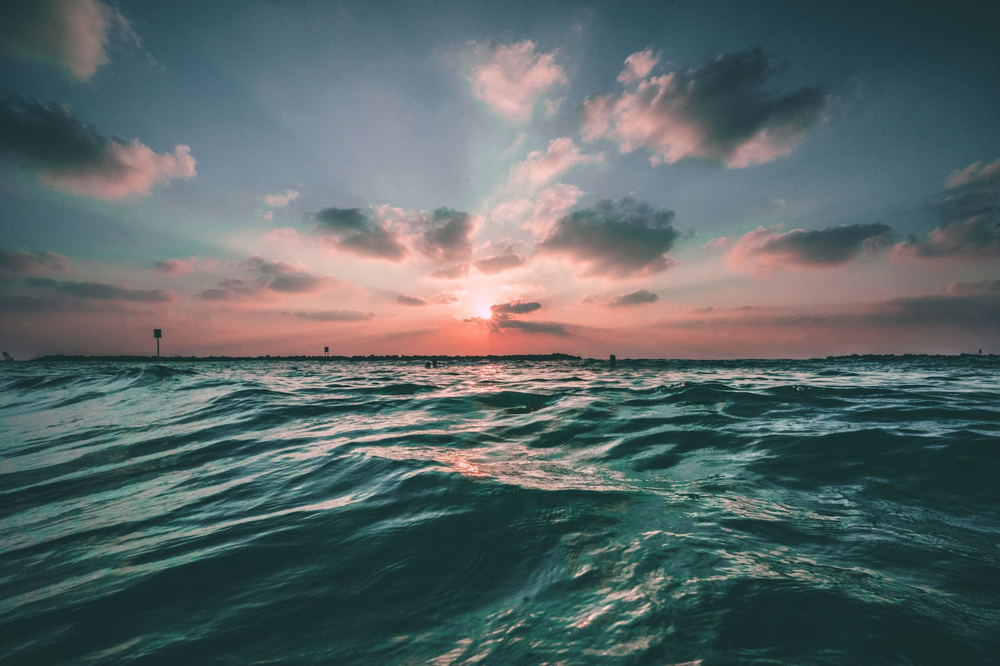
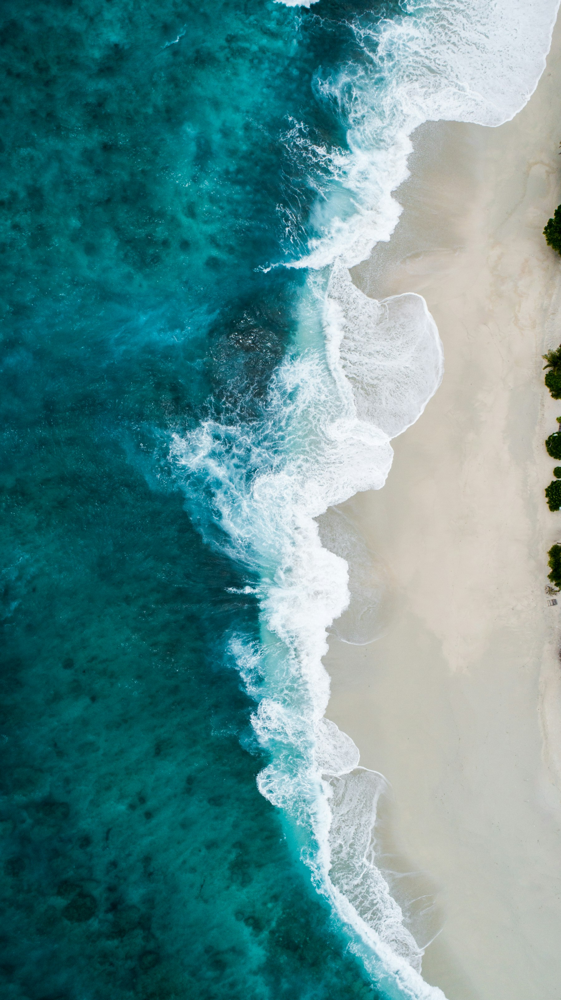

01
Meet
The slipway, twenty minutes before sunrise. Hats on. Names said out loud, so we know who is in.

First Light
Issue 01 of the journal for Vela Swim Club, St Ives.
Photograph via Unsplash
From the founder
Mara Ellison on why the club meets before the town does.
Vela started as four people and a thermos on the slipway. We still meet there, twenty minutes before sunrise, and we still leave the watch in the bag.
The swim is short on purpose. Out to the first buoy and back, then the steps. Nobody is training for a clock. The point is to be in the water while the light changes, and to get out while you still want to stay.
We do not race the sun. We meet it.
New swimmers come with a guide for the first month. We talk about the exit before we talk about the entry. If the sea is up, we walk. That rule has never been put to a vote.
Afterwards there is coffee at the top of the slip, and then the day. The club exists for that order of things: water, then warmth, then whatever you were going to do anyway.
If you want the hour, write to mara@velaswim.club. Bring a towel you do not mind the sand on.

The line
From above, the coast is a clean edge. In the water it is not. The swim ends where the exit is obvious.
Photograph via Unsplash
The hour
Four parts, always in this order. Skipping one is how a short swim gets long.
01
The slipway, twenty minutes before sunrise. Hats on. Names said out loud, so we know who is in.
02
Look at the exit first. If the steps look wrong, or the set is up, the swim becomes a walk. No one argues.
03
Out to the first buoy and back. Stay where you can see the steps. The buoy is a marker, not a dare.
04
Dry clothes before conversation. Coffee after both. The hour is over when you are warm, not when you are tired.
Membership is a conversation, not a form. Write to mara@velaswim.club, or stand with us on a Saturday before you decide.